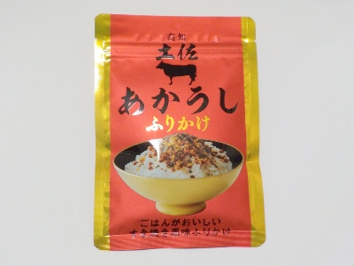

熊本県熊本市西区城山上代町68番地1
2026/07/10

販売者は株式会社四國建商さんで製造元がフタバさんです。
景気が悪いとふりかけが流行るそうです。私も食費を少しでも減らそうと思いふりかけを買いました。
このふりかけは1食あたり4gで1袋に30g入っています。なのでご飯が7杯は食べれる計算になります。
今までレトルトカレーを食べていた分をふりかけに変えれば、かなりコストダウンになりますね。
すき焼き風味ってことで、カリカリのお肉っぽい見た目のものが甘かったです。塩分でご飯を食べる感じではなく、甘味でご飯を食べる感じかなと思いました。
【おいしいものを食べよう。】【たくさん寝よう。】
【ソロ活をしよう!】【季節感のあることをしよう。】【動画視聴はほどほどに。】【当サイトの全てのコンテンツは無断転載禁止です。】